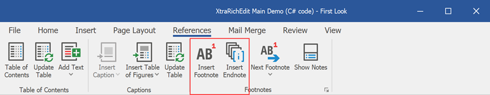

Insert and Edit a Footnote or an Endnote
Place the cursor at the required position.
Click the Insert Footnote or Insert Endnote button in the Footnotes group on the References tab.

Enter the footnote or endnote text. The note content can be formatted as regular text.
Right-click a note and select Go to Footnote or Go to Endnote to find the note reference position.

View Notes
To display notes, click Show Notes in the Footnotes group on the References tab and select the required area.

Use buttons on the References tab to navigate through footnotes or endnotes.

Convert Footnotes to Endnotes and Vice Versa
Place the cursor within the target footnote or endnote. Right-click the note and select Convert to Endnote or Convert to Footnote.

You can convert all footnotes to endnotes and vice versa. Click the Footnotes dialog box launcher on the References tab.

In the Footnotes dialog, click the Convert button. This invokes the Convert Notes dialog. Select the required option to convert or swap notes.

Remove a Footnote or Endnote
Delete the note reference to remove a footnote or endnote. Right-click the note and click Go to Footnote or Go to Endnote to locate the reference.